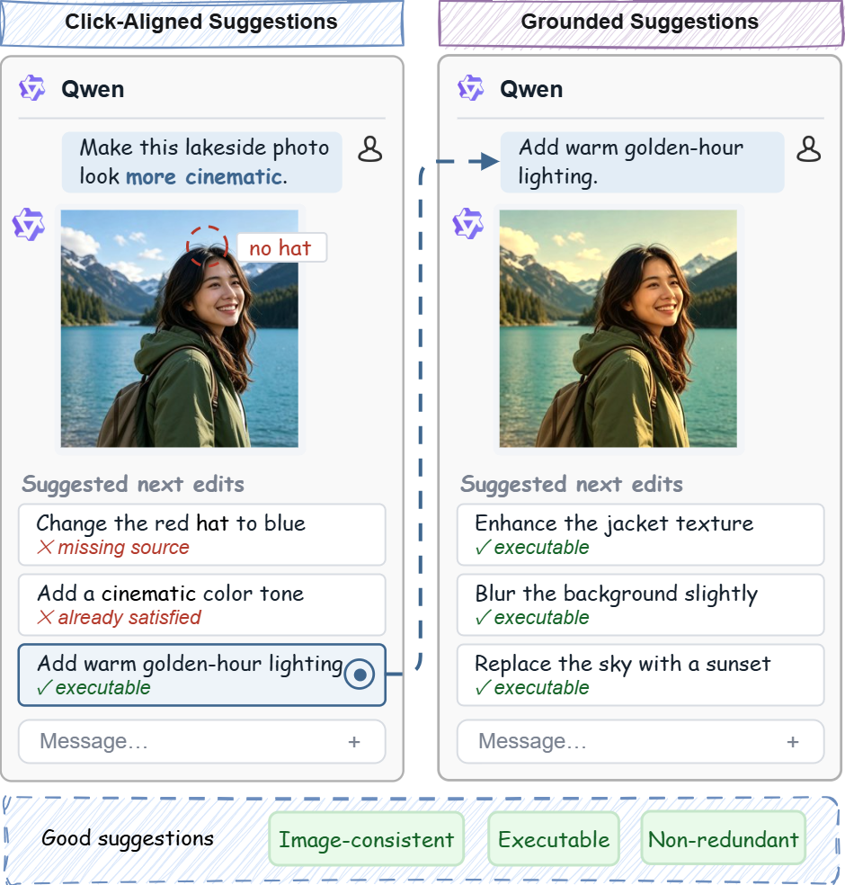
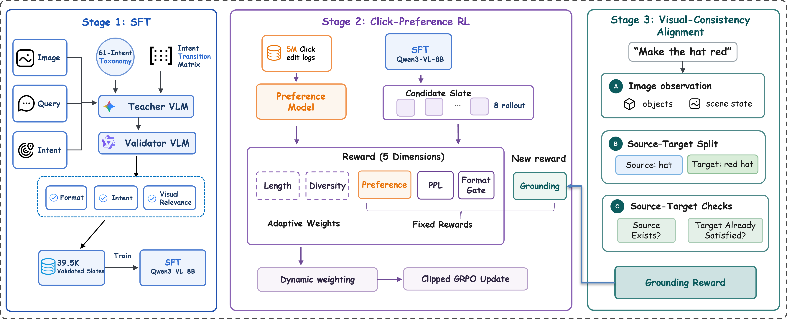
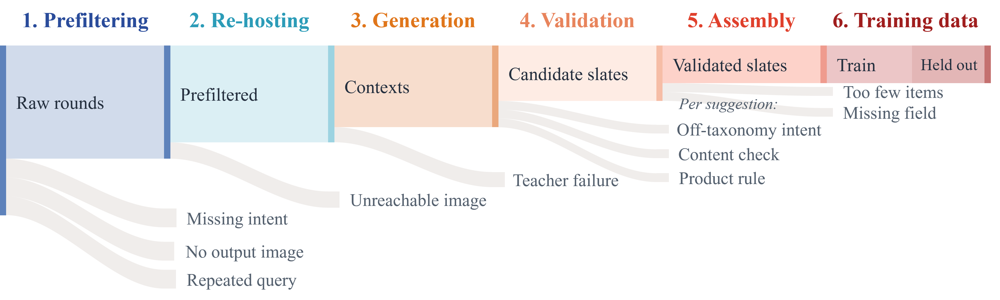
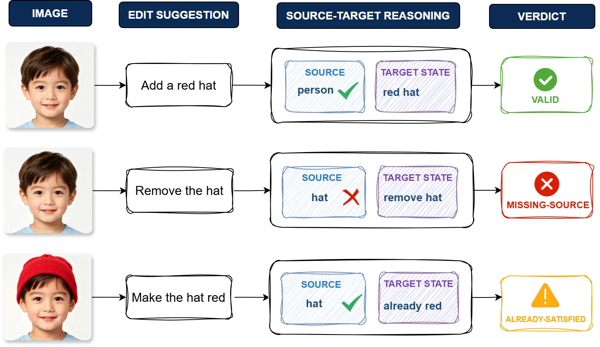

Supervised fine-tuning
Learn task-appropriate follow-up directions from human-reviewed intents and validated teacher-generated slates.
39.5K training slates1Southeast University 2Qwen Business Unit of Alibaba
✉ Co-corresponding authors

Conversational assistants increasingly recommend follow-up edits to help users continue a task, yet image-creation conversations remain underexplored. Useful follow-ups must reflect user preferences, offer diverse directions, and remain executable on the current image.
We audit 100,000 real multi-turn image-creation samples from Qwen App and find that 80.1% are image-dependent. We introduce a three-stage framework: first, human-reviewed editing intents and validated teacher outputs construct supervised targets; second, position-aware user click feedback and multi-objective reinforcement learning align suggestions with actual choices; third, an image-first source–target verifier supplies explicit visual-consistency supervision. In a 14-day randomized A/B test involving millions of users, the full framework improves recommendation CTR by 32.70%, image take-away rate by 16.32%, and average conversation turns per user by 39.90%, while reducing visual inconsistency from 3.7% to 0.9%.
Contributions
The work formulates multimodal follow-up edit recommendation and connects task supervision, behavioral preference, and explicit visual grounding in one deployed system.
We formalize follow-up editing as slate generation conditioned on the latest image, rewritten query, and editing intent—and show that four out of five observed follow-ups require the image.
Human-reviewed intent transitions create the initial action space. Position-aware click pairs and multi-objective GRPO then align it with what users actually choose.
A structured source–target verifier detects absent sources and already-satisfied targets, providing a grounding reward during training without adding serving latency.
The problem
Text-only relevance is not enough after an image has changed. Each recommended edit must be grounded in the latest visual state.
The instruction presupposes a red hat, but no hat is visible. The edit sounds concrete while being impossible to execute faithfully.
The image already has the requested cinematic treatment. The suggestion is executable in form but redundant in effect.
Our method
Each stage introduces a new source of supervision and addresses a failure left by the previous stage.
Learn task-appropriate follow-up directions from human-reviewed intents and validated teacher-generated slates.
39.5K training slatesLearn actual user preference from position-aware click pairs while protecting format, proximity, length, and diversity.
173,071 preference pairsAdd image-first source–target verification as a sixth reward and explicitly train away inconsistent edits.
training-time supervision only
Stage 1 · Task supervision
Online inputs provide the context, people define appropriate next directions, and a teacher turns those directions into candidate text.

Stage 2 · Behavioral supervision
A click indicates appeal, but it also depends on what the user likely saw. We pair a clicked suggestion only with unclicked suggestions displayed above it.
Enhance the jacket texture
paired as y−Blur the background slightly
paired as y−Replace the sky with a sunset
clicked y+Suggestions below the click are excluded because they may not have been viewed. This simple rule improves held-out click accuracy from 0.619 to 0.690 at a matched data budget.
Stage 2 jointly optimizes five non-grounding signals. Stage 3 retains those objectives and adds visual consistency as the sixth reward.
Stage 2 raises expert-rated quality and online CTR, yet visual inconsistency increases from 3.0% after SFT to 3.7%. Click feedback captures what looks appealing—not whether the edit is supported by the current image.
Stage 3 · Visual supervision
The verifier inventories the image before reading any candidate, preventing the instruction itself from creating unsupported visual assumptions.

Record visible people, objects, text, regions, and scene state before candidates are shown.
Extract the operation, required sources, and desired target state from each suggestion.
Ground every source with visual evidence and compare desired and current target states.
Penalize missing sources and already-satisfied targets during GRPO; serve only the final 8B policy.
End-to-end evaluation
Policies are evaluated on the same held-out Qwen App sessions with identical decoding. The online study uses concurrent user-level randomization and equal traffic allocation.
| Policy | GSB ↑ | Visual inconsistency ↓ | Redundancy ↓ |
|---|---|---|---|
| Prompt-engineered policy (PE) | +0 | 8.6% | 23.3% |
| Stage 1 · SFT | +332 | 3.0% | 17.2% |
| Stage 2 · SFT + click RL | +405 | 3.7% | 11.9% |
| Stage 3 · Full framework OURS | +446 | 0.9% | 8.8% |
GSB is aggregate expert-score gain over PE. Grounding is measured by an external visual audit.
More users select a recommended next edit.
More users keep the resulting edited image.
Grounded suggestions sustain longer creative sessions.
14 days · millions of users · 5% traffic per arm · all reported lifts p<0.05
Verifier study
A one-pass VLM confuses sources with targets and rejects valid creative edits. The ordered image-first procedure improves recall while sharply reducing false rejection.
| Verifier | Missing-source recall ↑ | Already-satisfied recall ↑ | Union recall ↑ | False rejection ↓ |
|---|---|---|---|---|
| Single-pass VLM | 61.6% | 43.4% | 47.5% | 22.2% |
| Source–target verifier OURS | 92.9% | 74.5% | 78.7% | 0.6% |
Deployment
The visual verifier contributes supervision during Stage 3 and checkpoint selection, but it is not part of the online serving path.
The deployed system remains one Qwen3-VL-8B policy followed by the existing display layer, which randomly selects three distinct suggestions from the generated slate. This preserves the product latency profile while carrying the visual-consistency improvement into production.
Takeaway
Behavioral feedback teaches the model what users want to choose. Visual supervision teaches it which choices remain meaningful on the current image.
Combining human-reviewed task structure, real click preference, and image-first verification produces follow-up edits that are more attractive, more diverse, and substantially more consistent—improving both the immediate recommendation and the creative conversation that follows.
@article{zhang2026what,
title={What to Edit Next: Visually Aligned Image-Editing Follow-Up Suggestions in Conversational Systems},
author={Zhang, Zhijing and Yu, Jinpeng and Song, Xin and Li, Bingnan and Li, Chuyue and Fang, Xiaolin and Liu, Jiaming and Huang, Ruihua},
year={2026},
note={Preprint}
}